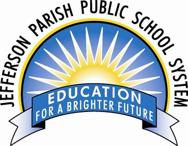

Jeferson Parish Public School


Welcome to Walton Oak Primary School
Address :6 Parijat, University Road,, Fergusson College Campus,
Shivajinagar, Pune, Maharashtra 411004
Tel:+81 2358986302
Mobile No:+81 2358986302
- Fergusson College (FC) is a degree college in western India, situated in the city of Pune. It was founded in 1885 by the Deccan Education Society and was the first privately governed college in India. Professor Vaman Shivram Apte was the first principal of the college.
- Fergusson College (FC) is a degree college in western India, situated in the city of Pune. It was founded in 1885 by the Deccan Education Society and was the first privately governed college in India. Professor Vaman Shivram Apte was the first principal of the college.
- Fergusson College (FC) is a degree college in western India, situated in the city of Pune. It was founded in 1885 by the Deccan Education Society and was the first privately governed college in India. Professor Vaman Shivram Apte was the first principal of the college.
- Fergusson College (FC) is a degree college in western India, situated in the city of Pune. It was founded in 1885 by the Deccan Education Society and was the first privately governed college in India. Professor Vaman Shivram Apte was the first principal of the college.